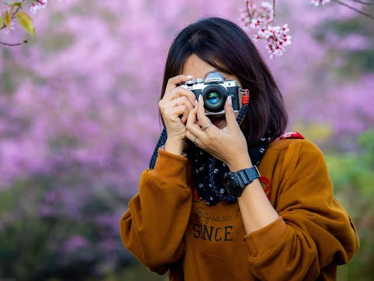

Fotografía que cuenta tu historia
Quién soy
Mi nombre es Valentina Suárez y soy fotógrafa profesional independiente. Me dedico a crear imágenes que representen momentos, personas y proyectos de una manera natural y auténtica.
Trabajo con cada cliente de forma personalizada, buscando comprender qué necesita y qué quiere transmitir a través de las fotografías.
Mi objetivo es generar una experiencia cómoda durante cada sesión y entregar imágenes que puedan conservarse y disfrutarse a lo largo del tiempo.

Servicios
- Sesiones fotográficas personales
- Fotografía para parejas
- Sesiones familiares
- Cobertura fotográfica de eventos
- Fotografía de productos para emprendimientos
- Fotografía para contenido de redes sociales
Trayectoria
Comencé a trabajar profesionalmente en fotografía hace cinco años, desarrollando proyectos para clientes particulares, eventos y pequeños emprendimientos.
A lo largo de mi experiencia fui especializándome en retratos y fotografía de estilo natural, priorizando la espontaneidad y la personalidad de cada cliente.
Actualmente trabajo de manera independiente y continúo capacitándome para mejorar tanto la calidad técnica como la experiencia ofrecida en cada sesión.